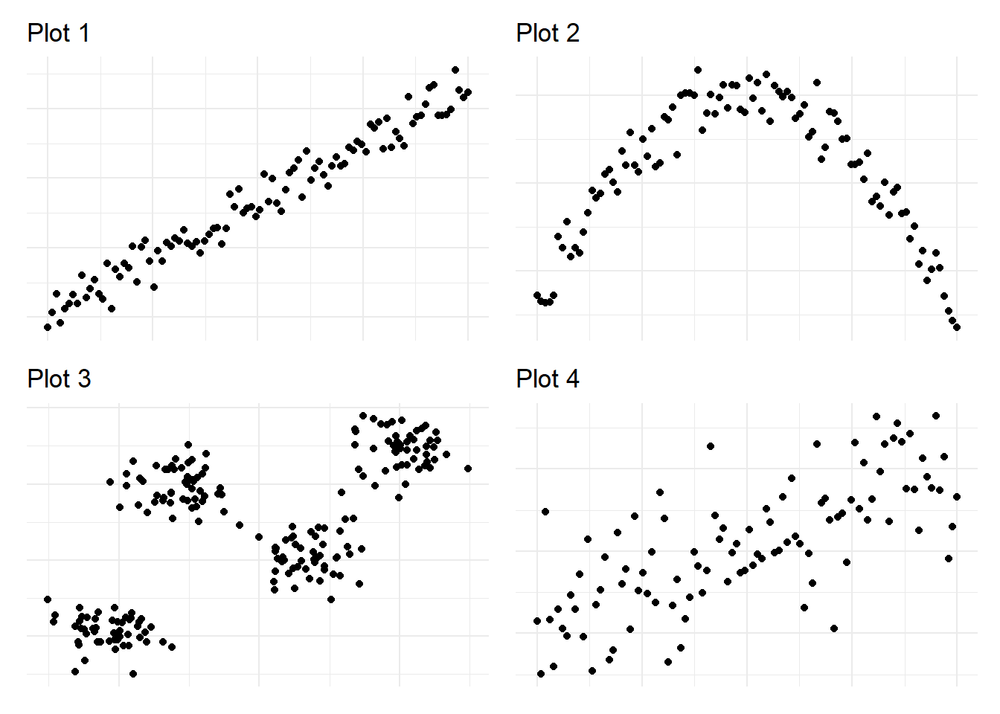

library("tidyverse")
library("tidymodels")4 Regression Trees
In this fourth exercise session, we want to introduce regression trees. Regression trees, up to this day, are still one of the most important statistical models as they address important aspects like interpretability but also versatility in terms of the prediction approach since they are non-linear. Another important aspect is their integration with other, more powerful statistical models like random forests, which we will cover in a later session.
Besides regression, tree-based models can also be used for classification tasks, however, in this exercise in particular, we will focus on the regression case and consider classification tasks later on.
5 Exercises
Some of the packages we will use throughout the session.
Warning: package 'ggtext' was built under R version 4.4.15.1 Exercise 1: Theoretical aspects of regression trees
In this exercise, we want to gain intuition for the theoretical aspects of regression trees.
5.1.1 Exercise 1a: Representations and modelling decisions
Before diving into the process of building and evaluating a tree rigorously, we first consider different representations of binary trees, check their validity, and decide for simple datasets, whether they are suitable for regression trees.
5.1.1.1 Exercise 1a i:
Consider the following two splits of the feature space generated by two features \(X_1\) and \(X_2\). Argue, which one of the splits was generated by a binary splitting tree!

Solution
Split 1 can’t be produced by a binary tree, because the bottom-center rectangle is overlapping the left-most rectangle.
5.1.1.2 Exercise 1a ii:
Consider the following split generated by a binary tree. \(t_1,…,t_4\) denote the splitting conditions, \(R_1,…,R_4\) the final regions, and \(X_1,X_2\) the variables used for evaluating the splitting conditions.
Draw a binary tree that corresponds to the split given below.

Solution

5.1.1.3 Exercise 1a iii:
For the following scatterplots, decide whether a simple linear model ( \(y=\hat \beta_1x+\hat \beta_0\) ) or a regression tree should be chosen for modeling the data.

Solution
- For the data in the first plot, we should use a simple linear model, as the data seems to follow a simple linear trend.
- A linear model is most likely not suitable for modelling this data, as the shape of the cloud of points looks more like a parabola instead of a line.
- As the third plot consists of points that can be assigned to four (almost) distinct regions, a regression tree seems to be more suitable than a linear model.
- At first, the data in the fourth plot seems to be too messy to make a decision. However, upon closer inspection, there are several indicators that a linear model might perform better:
- The points in the center seem to follow a positive linear trend.
- The deviations of points around this linear trend seem to be distributed in a way, that there are more points towards the line than further away. So the residuals could be assumed to be normally distributed.
5.1.2 Exercise 1b: Modelling a regression tree
Now, that we have considered some visual examples of trees and gained an intuition of situations where trees might be a suitable model, we now want to focus on the process of building a tree.
5.1.2.1 Exercise 1b i:
Consider the following dataset. Calculate the first optimal splitting point with respect to \(x\).
data <- tibble(
x = c(1,0.5,2.0,5.5,4.5),
y = c(10,7,8,3,4)
)| x | y |
|---|---|
| 1.0 | 10 |
| 0.5 | 7 |
| 2.0 | 8 |
| 5.5 | 3 |
| 4.5 | 4 |
In order to do so, you have to proceed as follows:
- Derive the order statistics of \(\{x_1,...,x_n\}\)
- Derive the set \(S := \left\{\frac{1}{2}(x_{(r)}+x_{(r+1)}):r=1,...,n-1\right\}\) of all potential splitting points.
- For each potential splitting point, derive the regions \(R_1\) and \(R_2\) and calculate the estimate \(\hat y_1\) and \(\hat y_2\) for the respective regions.
- Calculate the loss \(\mathcal{L}(y,\hat y) := \sum_{i:x_i\in R_1} (y_i-\hat y)^2 + \sum_{i:x_i\in R_2}(y_i-\hat y)^2\).
- Derive the optimal splitting point by settling for the splitting point leading to the smallest loss \(\mathcal{L}\).
Solution
loss_x<- function(data,r) {
xr = sort(data$x)[r]
y1 <- mean(data$y[data$x<=xr])
y2 <- mean(data$y[data$x>xr])
loss<-sum((data$y[data$x<=xr]-y1)^2) + sum((data$y[data$x>xr]-y2)^2)
return(loss)
}Since we are interested in finding the optimal split with respect to \(x_1=x\), consider the sets of all possible splits \[ S := \left\{\frac{1}{2}(x_{(r)}+x_{(r+1)}):r=1,...,n-1\right\} = \{0.75,1.5,3.25,5\}. \]
Here, \(\{x_{(r)},\, r = 1,...,n\} = \{0.5,1,2,4.5,5.5\}\) denotes the order statistic of \(x\).
For \(r=1\) we have \(s = 0.75\) and \[ \begin{align*} R_1(1,0.75) &= \{x: x \leq 0.75\} = \{0.5\},\\ R_2(1,0.75) &= \{x: x > 0.75\} = \{1.0,2.5,5.5,4.5\}. \end{align*} \] Then, \[ \begin{align*} \hat y_1 &= \frac{1}{|R_1|}\sum_{i:x_{i}\in R_1} y_i = \frac{1}{1}\cdot 7 = 7,\\ \hat y_2 &= \frac{1}{|R_2|}\sum_{i:x_{i}\in R_2} y_i = \frac{1}{4}(10+8+3+4) = 6.25. \end{align*} \] Given the above, we can calculate the Loss with respect to \(s = 0.75\), which is given by
\[ \begin{align*} \mathcal{L}(y,\hat y) &= \sum_{i:x_{i}\in R_1} (y_i-\hat y_{R_1})^2 + \sum_{i:x_{i}\in R_2} (y_i-\hat y_{R_2})^2 \\ &= (7 -7)^2 + (10-6.25)^2 + (8-6.25)^2 + (3-6.25)^2 + (4-6.25)^2\\ &= 32.75 \end{align*} \]
loss_x(data,1)[1] 32.75For \(r=2\) we have \(s = 1.5\) and \[ \begin{align*} R_1(1,1.5) &= \{x: x \leq 1.5\} = \{0.5,1.0\},\\ R_2(1,1.5) &= \{x: x > 1.5\} = \{2.5,5.5,4.5\}. \end{align*} \] Then, \[ \begin{align*} \hat y_1 &= \frac{1}{|R_1|}\sum_{i:x_{i}\in R_1} y_i = \frac{1}{2}\cdot (7+10) = 8.5,\\ \hat y_2 &= \frac{1}{|R_2|}\sum_{i:x_{i}\in R_2} y_i = \frac{1}{3}(8+3+4) = 5. \end{align*} \] Given the above, we can calculate the Loss with respect to \(s = 1.5\), which is given by
\[ \begin{align*} \mathcal{L}(y,\hat y) &= \sum_{i:x_{i}\in R_1} (y_i-\hat y_{R_1})^2 + \sum_{i:x_{i}\in R_2} (y_i-\hat y_{R_2})^2 \\ &= (7-8.5)^2 + (10-8.5)^2 + (8-5)^2 + (3-5)^2 + (4-5)^2\\ &= 18.5 \end{align*} \]
loss_x(data,2)[1] 18.5For \(r=3\) we have \(s = 3.25\) and \[ \begin{align*} R_1(1,3.25) &= \{x: x \leq 3.25\} = \{0.5,1.0, 2.5 \},\\ R_2(1,3.25) &= \{x: x > 3.25\} = \{5.5,4.5\}. \end{align*} \] Then, \[ \begin{align*} \hat y_1 &= \frac{1}{|R_1|}\sum_{i:x_{i}\in R_1} y_i = \frac{1}{3}\cdot (7+10+8) = 8.333,\\ \hat y_2 &= \frac{1}{|R_2|}\sum_{i:x_{i}\in R_2} y_i = \frac{1}{2}(3+4) = 3.5. \end{align*} \] Given the above, we can calculate the Loss with respect to \(s = 4\), which is given by
\[ \begin{align*} \mathcal{L}(y,\hat y) &= \sum_{i:x_{i}\in R_1} (y_i-\hat y_{R_1})^2 + \sum_{i:x_{i}\in R_2} (y_i-\hat y_{R_2})^2 \\ &= (7-8.333)^2 + (10-8.333)^2 + (8-8.333)^2 + (3-3.5)^2 + (4-3.5)^2\\ &= 5.167 \end{align*} \]
loss_x(data,3)[1] 5.166667For \(r=4\) we have \(s = 5\) and \[ \begin{align*} R_1(1,5) &= \{x: x \leq 5\} = \{0.5,1.0, 2.5,4.5 \},\\ R_2(1,5) &= \{x: x > 5\} = \{5.5\}. \end{align*} \] Then, \[ \begin{align*} \hat y_1 &= \frac{1}{|R_1|}\sum_{i:x_{i}\in R_1} y_i = \frac{1}{4}\cdot (7+10+8+4) = 7.25,\\ \hat y_2 &= \frac{1}{|R_2|}\sum_{i:x_{i}\in R_2} y_i = \frac{1}{1}\cdot 3 = 3. \end{align*} \] Given the above, we can calculate the Loss with respect to \(s = 5\), which is given by
\[ \begin{align*} \mathcal{L}(y,\hat y) &= \sum_{i:x_{i}\in R_1} (y_i-\hat y_{R_1})^2 + \sum_{i:x_{i}\in R_2} (y_i-\hat y_{R_2})^2 \\ &= (7-7.25)^2 + (10-7.25)^2 + (8-7.25)^2 + (4-7.25)^2 + (3-3)^2\\ &= 18.75 \end{align*} \]
loss_x(data,4)[1] 18.75Since \(\mathcal{L}(y,\hat y)\) is the lowest for \(r=3\), i.e., \(\mathcal{L}(y,\hat y) = 5.167\), \(s = 3.25\) is the optimal splitting point with respect to \(x\).
5.1.2.2 Exercise 1b ii:
Given the tibble data, create a simple scatter plot and add a dashed line indicating the initial splitting point. An example of what such a plot could look like can be found below.
title_text = "Scatterplot showing the <span style='color:red'>optimal threshold</span> for an initial split with respect to x"
data %>% ggplot(aes(x,y))+
geom_point(size = 3, alpha = 0.7) +
geom_vline(xintercept = 3.25, linetype = "dashed", color = "red") +
theme_minimal()+
theme(
plot.title = element_markdown()
)+
labs( x = "x",
title = title_text)
5.1.2.3 Exercise 1b iii:
Calculate the improvement of the given split. Recall, that the improvement of a split is given by
\[ \frac{\mathrm{MSE}_1 \cdot n_1 - (\mathrm{MSE}_2 \cdot n_2 + \mathrm{MSE}_3 \cdot n_3)}{\mathrm{MSE_1}\cdot n_1}, \]
where \(\mathrm{MSE}_1\) denotes the mean squared error of the region before the split and \(\mathrm{MSE_2}\) and \(\mathrm{MSE_3}\) are the mean square errors of the respective regions after the split. \(n_i,\, i=1,2,3\) denotes the number of samples in the respective region.
Solution
The improvement is given by the following term.
\[ \frac{\mathrm{MSE}_1 \cdot n_1 - (\mathrm{MSE}_2 \cdot n_2 + \mathrm{MSE}_3 \cdot n_3)}{\mathrm{MSE_1}\cdot n_1} \]
Calculating \(MSE_i\) for \(i=1,2,3\) yields
\[ \begin{align} n_1 \cdot \mathrm{MSE}_1 &= (10-6.4)^2 + (7-6.4)^2 + (8-6.4)^2 + (3-6.4)^2 + (4-6.4)^2 = 33.2, \\ n_2 \cdot \mathrm{MSE}_2 &= (7-8.333)^2 + (10-8.333)^2 + (8-8.333)^2 = 4.667, \\ n_3 \cdot \mathrm{MSE}_3 &= (3-3.5)^2 + (4-3.5)^2 = 0.5\ . \end{align} \]
The improvement for this split is therefore
\[ \frac{\mathrm{MSE}_1 \cdot n_1 - (\mathrm{MSE}_2 \cdot n_2 + \mathrm{MSE}_3 \cdot n_3)}{\mathrm{MSE_1}\cdot n_1} = \frac{33.2 - (4.667 + 0.5)}{33.2} = 0.8444 \]
5.2 Exercise 2: Modelling and tuning a regression tree
In this exercise, we want to apply our theoretical knowledge to training a tree-based model on the Apartment rental offers in Germany dataset. As in Session 03 we will be using the rental offers in Munich to build a predictive model for the base rent.
5.2.1 Preprocessing and splitting
Given the data_muc_filtered dataset, we apply the usual transformations.
data_muc <- read.csv("data/data_muc_filtered.csv")
data_muc_filtered <- data_muc %>%
select(!c("X","serviceCharge","heatingType","picturecount","totalRent",
"firingTypes","typeOfFlat","noRoomsRange", "petsAllowed",
"livingSpaceRange","regio3","heatingCosts", "floor",
"date", "pricetrend")) %>%
na.omit %>%
mutate(
interiorQual = factor(
interiorQual,
levels = c("simple", "normal", "sophisticated", "luxury"),
labels = c("simple", "normal", "sophisticated", "luxury"),
ordered = TRUE
),
condition = factor(
condition,
levels = c("need_of_renovation", "negotiable","well_kept","refurbished",
"first_time_use_after_refurbishment",
"modernized", "fully_renovated", "mint_condition",
"first_time_use"),
ordered = TRUE
),
geo_plz = factor(geo_plz)
) %>%
mutate_if(is.logical, ~ as.numeric(.)) %>%
filter(baseRent <= 4000, livingSpace <= 200)set.seed(1)
split <- initial_split(data_muc_filtered)
data_train <- training(split)
data_test <- testing(split)
folds <- vfold_cv(data_train, v = 10)5.2.2 Exercise 2a:
5.2.2.1 Exercise 2a i: Creating a recipe
Create a recipe rec_rt with the following properties:
- As parameters, directly pass a formula where you fit every feature on the variable
base_rentand as data thedata_traindataset. - Update the feature
scoutIdto a new role calledID. - Create ordinal scores for the features
interiorQualandcondition. - Create dummy variables for the feature
geo_plz. - Remove all zero variance features, i.e. all features that only contain a single value.
You can check whether you successfully created the recipe by calling rec_rt and comparing it to the output below.
rec_rt <- recipe(
formula = baseRent ~.,
data = data_train
) %>%
update_role(scoutId, new_role = "ID") %>%
step_ordinalscore(interiorQual, condition)%>%
step_dummy(geo_plz)%>%
step_zv(all_predictors())5.2.2.2 Exercise 2a ii: Specifying the model
Create an instance of the decision_tree class called model_rt_tune with the parameters min_n = tune(),tree_depth = tune(), and cost_complexity = tune(). Set the mode to "regression" and the engine to "rpart". If calling model_rt_tune returns the same output as the one below, you have successfully solved this exercise.
model_rt_tune <-
decision_tree(
min_n = tune(),
tree_depth = tune(),
cost_complexity = tune()
) %>%
set_mode("regression") %>%
set_engine("rpart")
model_rt_tuneDecision Tree Model Specification (regression)
Main Arguments:
cost_complexity = tune()
tree_depth = tune()
min_n = tune()
Computational engine: rpart 5.2.2.3 Exercise 2a iii: Creating a workflow and specifying metrics
Create a metric set called multi_metric with rmse and rsq as arguments and create a workflow called rt_wflow to which you add the model_rt_tune model and the rec_rt recipe. If calling rt_wflow and multi_metric returns the same output as the one below, you have successfully solved this exercise.
rt_wflow <-
workflow() %>%
add_model(model_rt_tune) %>%
add_recipe(rec_rt)
rt_wflow══ Workflow ════════════════════════════════════════════════════════════════════
Preprocessor: Recipe
Model: decision_tree()
── Preprocessor ────────────────────────────────────────────────────────────────
3 Recipe Steps
• step_ordinalscore()
• step_dummy()
• step_zv()
── Model ───────────────────────────────────────────────────────────────────────
Decision Tree Model Specification (regression)
Main Arguments:
cost_complexity = tune()
tree_depth = tune()
min_n = tune()
Computational engine: rpart multi_metric <- metric_set(rmse,rsq)
multi_metricA metric set, consisting of:
- `rmse()`, a numeric metric | direction: minimize
- `rsq()`, a numeric metric | direction: maximize5.2.2.4 Exercise 2a iv: Setting up a tune-grid
Now, that we have set up the model, specified the recipe, and created a workflow, we need to define a grid for the grid search of the tuning parameters min_n,tree_depth, and cost_complexity. Instead of defining one manually, we can use the grid_regular function of the {dials} package instead. The grid_regular function creates a tibble with one column for each parameter and a row for every parameter combination. One advantage of this function is, that we can pass our tuning parameters directly into it and the grid_regular function creates a range of valid values. Consider the following example: The min_n parameter, which determines the minimum number of data points in a node that is required for the node to be split further, takes values between \(0\) and \(40\). Calling the grid_regular function with min_n() and levels = 5, creates a grid with five values ranging from \(0\) to \(40\), as you can see in the code chunk below.
grid_regular(min_n(),levels = 5)# A tibble: 5 × 1
min_n
<int>
1 2
2 11
3 21
4 30
5 40Instead of passing the tuning parameters manually as we have done in the example above, we can also simply use the extract_parameter_set_dials function, which returns all the parameters we have specified for the tuning process.
Create an instance of the grid_regular object with 4 levels, by passing the rt_wflow workflow to the extract_parameter_set_dials function and passing this to the grid_regular function with levels = 4 as an additional input parameter. If calling head(tree_grid) returns the same output as the one below, you have successfully solved this exercise.
tree_grid <- rt_wflow %>%
extract_parameter_set_dials %>%
grid_regular(levels = 4)
head(tree_grid)# A tibble: 6 × 3
cost_complexity tree_depth min_n
<dbl> <int> <int>
1 0.0000000001 1 2
2 0.0000001 1 2
3 0.0001 1 2
4 0.1 1 2
5 0.0000000001 5 2
6 0.0000001 5 25.2.3 Exercise 2b: Training the model and evaluating the results
5.2.3.1 Exercise 2b i: Model training
Given our workflow, the grid for hyperparameter tuning, the metric set, and resampling specification, we can finally train our model using the tune_grid function.
Create an instance called rt_res of the tune_grid function, by piping the rt_wflow object to the tune_grid function. As parameters for the tune_grid function, use grid = tree_grid, metrics = multi_metric, and resamples = folds.
Warning: Training the model might take a few minutes, as we are effectively training 64 tree models.
rt_res <-
rt_wflow %>%
tune_grid(
grid = tree_grid,
metrics = multi_metric,
resamples = folds
)5.2.3.2 Exercise 2b ii: Interpreting the results
Given the following plot. What can you say about the relationship between the tree parameters Tree Depth, Minimal Node Size, and Cost-Complexity Parameter with respect to the RMSE?
autoplot(rt_res) + theme_minimal()
Solution
If the tree depth parameter is set to \(1\), the other two parameters do not seem to have an impact on the RMSE and it therefore remains constant at around \(500\) EUR. So, from now on, we will only consider the case where tree depth > 1.
An increasing complexity parameter (CP) generally leads to a higher RMSE, except for the case where minimal node size = 2.
If CP\(\leq 10^{-4}\), the CP does not seem to influence model performance. Only if the Cost-Complexity Parameter \(\approx 0.1\), the RMSE increases noticeably.
A point can be made, that the best performing model has a minimal node size of either \(14\) or \(27\), however, the difference in RMSE is only marginal for these two cases.
5.2.3.3 Exercise 2b iii: Selecting the best model
Given the rt_res tibble, use the select_best function to select the best model based on the metric rmse and save it under the name rt_res_best.
rt_res_best<- rt_res %>%
select_best(metric = "rmse")5.2.4 Exercise 2c: Evaluating the best model
Now, that we have successfully selected the best model based on the cross-validation approach, the next step is to evaluate it on our test set data_test.
5.2.4.1 Exercise 2c i:
Create a model last_rt_fit by piping the rt_wflow to the finalize_worflow function, where you pass the previously created rt_res_best as an argument and pipe this finalized workflow to the last_split function, where you pass the split object as an argument.
Once you have fit the last model, utilize the collect_metrics function to obtain the metrics of the model on the dataset data_test.
last_rt_fit <-
rt_wflow %>%
finalize_workflow(rt_res_best) %>%
last_fit(split)
last_rt_fit %>% collect_metrics()# A tibble: 2 × 4
.metric .estimator .estimate .config
<chr> <chr> <dbl> <chr>
1 rmse standard 376. Preprocessor1_Model1
2 rsq standard 0.717 Preprocessor1_Model15.2.4.2 Exercise 2c ii:
It is usually easier to get a feeling for model performance by visualizing the results. One way to do that would be to plot the predicted values of our model against the actual values. By adding a simple line through the origin with slope one, we can then evaluate the estimates as follows:
Points that are closely scattered around this line have been well predicted, whereas points further away from this line indicate that the model performed badly.
The goal of this exercise is for you to rebuild the plot that is depicted below.
title_text <- "Predictions of the test set plotted against the actual values"
last_rt_fit %>%
collect_predictions() %>%
ggplot(aes(baseRent, .pred)) +
geom_abline(slope = 1, lty = 2, color = "red", alpha = 1) +
geom_point(alpha = 0.6, color = "green")+
labs(
x = "True base rent",
y = "Estimated base rent",
title = title_text
)+
coord_fixed()